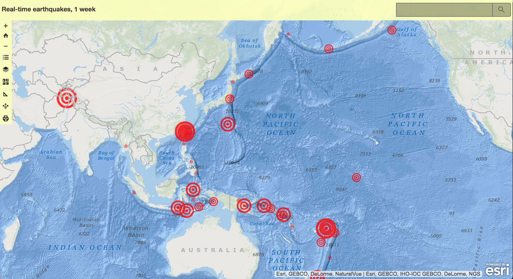

GEOG 4046 Assignment Portfolio
This is a collection of webmaps created for the LSU course GEOG 4046: WebGIS.
- Book Assignment 01
WebMap displaying top 3 destinations to visit in Puerto Rico.

- Book Assignment 02
WebMap displaying location and data for earthquakes in the past week.
 - Book Assignment 03a
WebMap that allows users to input locations on map where sightings were spotted on LSU's campus.